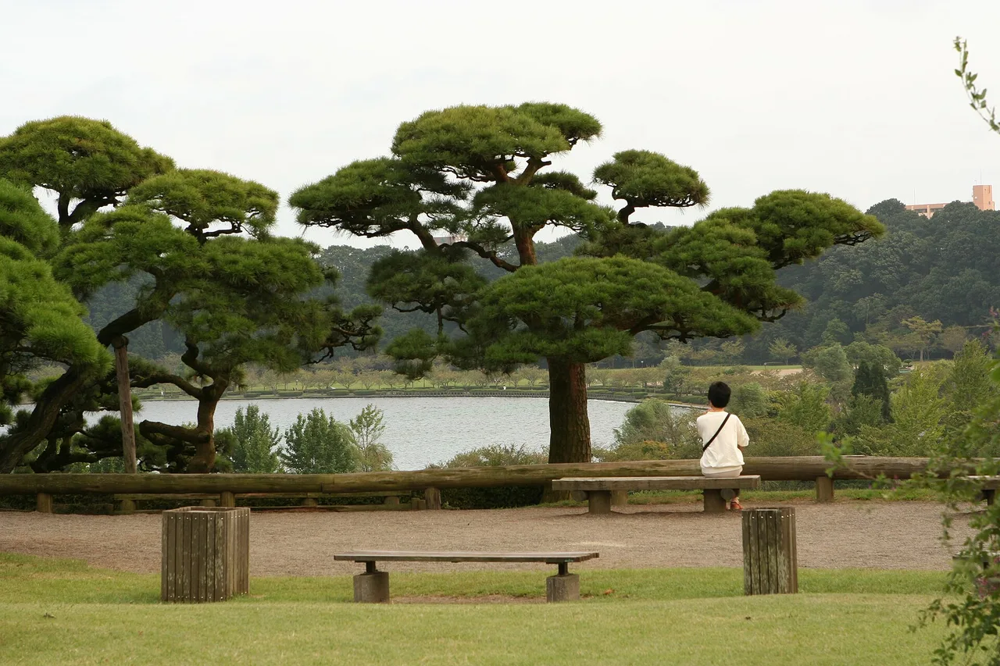

Ibaraki Travel Guide for Japanese Learners
Seasonal flower parks, a giant Buddha, and natto just north of Tokyo.

Ibaraki is an easy escape from the capital. Hitachi Seaside Park bursts with blue nemophila in spring and red kochia in autumn, and Ushiku hosts one of the world's tallest bronze statues.
History & background
Ibaraki (茨城) was the Mito (水戸) domain of a senior Tokugawa branch; the scholarly Mito lords created Kairaku-en (偕楽園), one of Japan's three great gardens, as a space to share with the public.
What to see
- Hitachi Seaside Park flower fields
- Ushiku Daibutsu (giant Buddha)
- Kairaku-en — one of Japan's three great gardens
- Fukuroda Falls
Hidden gems
- Oarai Isosaki Shrine sits dramatically on rocky cliffs above the Pacific, offering stunning coastal views and a working fishing port atmosphere nearby.
- Kasama Inari Shrine features thousands of vermillion torii gates winding up a forested hillside, far quieter than Kyoto's famous counterpart.
- Akane-machi sake brewery district in Mito preserves Edo-period wooden storefronts where you can tour working sake breweries and taste local varieties.
Some links above are affiliate links. We may earn a commission at no extra cost to you. We only list services we'd use ourselves.
What to eat
Mito is the home of natto (fermented soybeans); also fresh anglerfish (ankō).
Getting there & when to go
Getting there: Mito is ~1h15m from Tokyo by limited express; Hitachi Seaside Park by bus from Katsuta.
Best time: Late April–May for blue nemophila; October for the crimson kochia hills.
When to go — season by season
Spring (late April–May) fills Hitachi Seaside Park (国営ひたち海浜公園) with sky-blue nemophila; autumn turns its kochia hills crimson. Plum blossoms open Kairaku-en in late winter.
Local culture
Natto production in Mito dates back centuries and remains a point of local pride—shops display their fermentation vessels openly, and locals enjoy it at breakfast with rice and raw egg. Visitors should expect the pungent smell in markets; it's integral to Ibaraki identity, not something to avoid.
Ibaraki's agricultural heritage runs deep: the prefecture is a major producer of sweet potatoes, melons, and persimmons. Farm stands along rural roads sell produce directly, and seasonal festivals celebrate harvests with local dishes that restaurants in Tokyo cannot replicate.
A suggested visit
Time a day trip from Tokyo to the nemophila or kochia peak at Hitachi Seaside Park, then add the giant Ushiku Daibutsu (牛久大仏) on the way back. Mito's Kairaku-en suits a plum-season visit.
Seasonal tip: Visit Hitachi Seaside Park in late April or early May for nemophila, but arrive before 10 a.m. on weekends—parking fills quickly and crowds peak mid-morning as buses arrive from Tokyo.
Local etiquette: At Ushiku Daibutsu, remove your shoes before entering the statue's interior chamber where visitors walk through the base; socks are acceptable but going barefoot shows respect.
Time your trip to Hitachi Seaside Park with the nemophila or kochia peak — check the bloom calendar.
Some links above are affiliate links. We may earn a commission at no extra cost to you. We only list services we'd use ourselves.
Common questions
Q. What's the best time to visit Hitachi Seaside Park?
A. Late April–May for brilliant blue nemophila flowers, or October for crimson kochia hills. Book accommodation early; these peak seasons fill up quickly since the park is only 1h15m from Tokyo.
Q. How do I get to Hitachi Seaside Park from Tokyo?
A. Take the limited express train to Katsuta (~1h15m from Tokyo), then catch a bus to the park. The park itself is massive, so wear comfortable shoes and plan several hours.
Q. Is natto really a must-try food in Ibaraki?
A. Mito is natto's birthplace, so yes—try it fresh there to understand why locals love fermented soybeans. Pair it with fresh anglerfish (ankō) for an authentic Ibaraki meal.